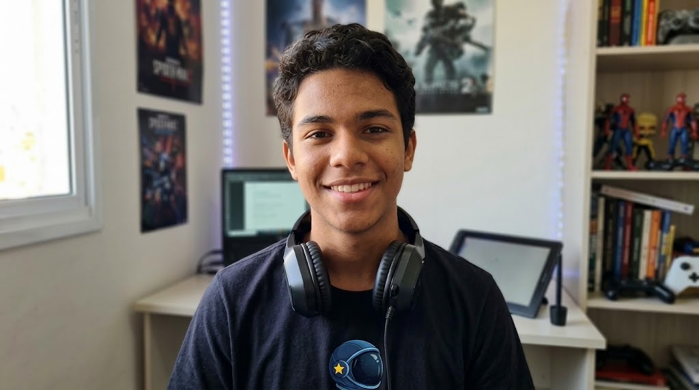

Abra o perfil na rede que deseja investigar. Observe as publicações, os comentários e os detalhes das imagens.
Selecione Instagram ou Twitter para abrir o perfil.

Escolha uma rede para explorar este perfil.